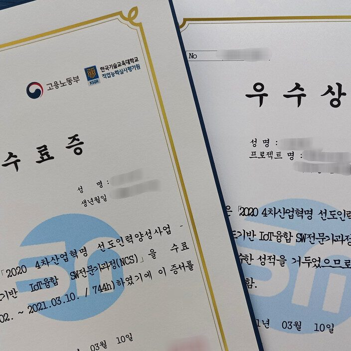

5개월도 안되는 짧은 시간동안 자소서, 포트폴리오를 만들어갈 수 있습니다! 취업 연계도 잘 되어있어 몇몇 친구들은 수료하기도 전에 취업에 성공했습니다 ??
비전공자도 쉽게 배울 수 있도록 연구원분들이 알려주시니까 '할 수 있다'는 마음만 가지고 오시면 됩니다!
프로젝트는 총 세번 진행되는데, 매번 다른 팀원들과 진행되기 때문에 많은 사람들과 친해질 수 있고, 자소서와 포트폴리오도 탄탄하게 만들 수 있습니다.
중간중간에 학생들이 지치지 않도록 마니또 선물, 자바페스티벌 등의 재미있는 행사들도 진행됩니다.
저는 코딩이 적성에 맞고, 새로운 사람들과 프로젝트를 할 수 있어서 학원 다니는 동안 너무 즐겁고 행복했습니다! 수료한지 이틀밖에 안됐는데 벌써 학생들, 선생님들 다 보고싶습니다ㅠㅠ
